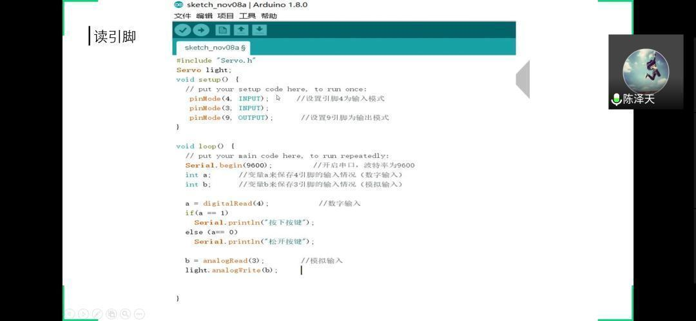
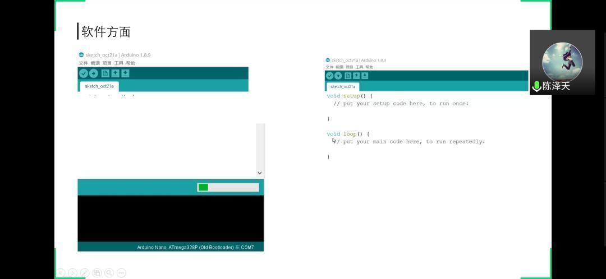
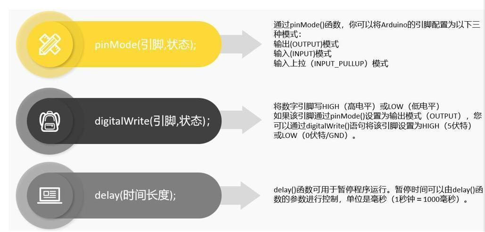
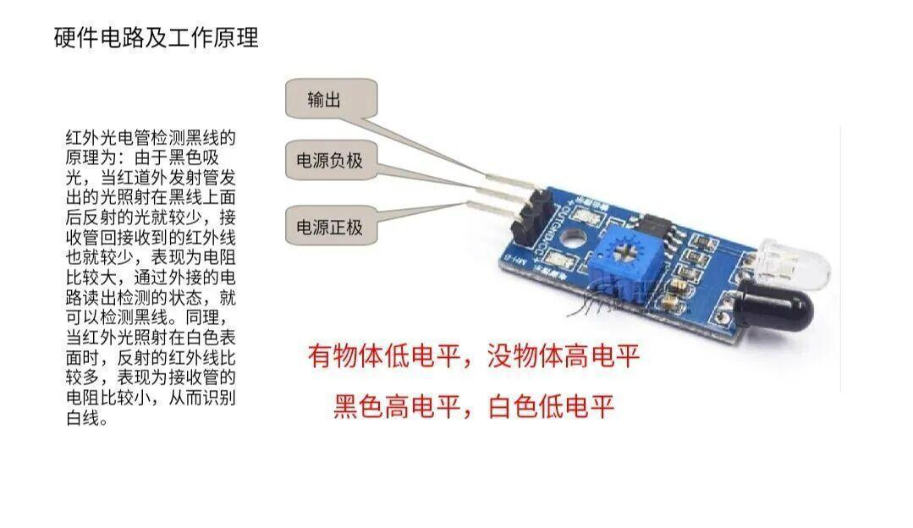
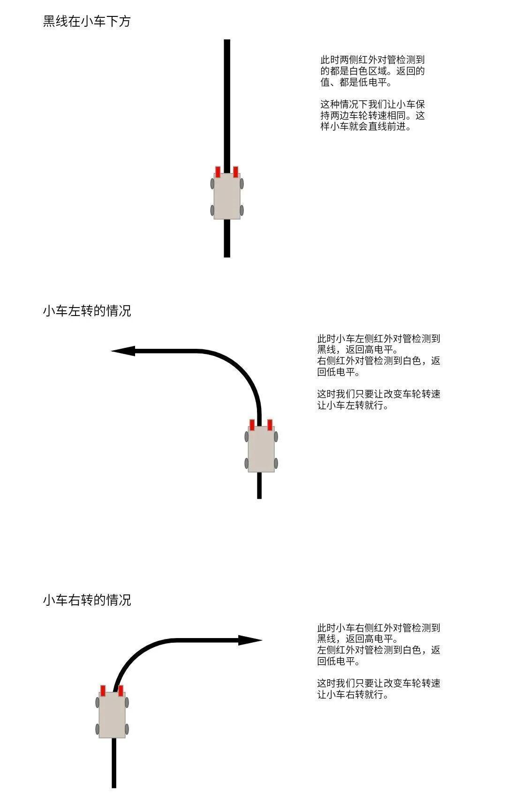

电协首次线上教学请查收~
或许我们的剧本，在2020年的年初按下了暂停键，但是我们终将再次启程！
本学期，电协依旧会进行教学，来教大家更多的电子设计方面的知识！

线上教学
我们采用腾讯会议来进行线上教学，虽然是线上教学但是同学们对学习的热情依然不减。
本次是由会长陈泽天来教授大家寻迹小车的相关知识。


下面是本次教学的内容啦~
寻迹小车
首先是带大家简单复习了一下上学期教的Arduino的一些知识，从软件方面、单片机的接口、三条基本语句、还有读引脚来进行复习

对于寻迹小车来说，红外对管是必不可少的！

最后就是寻迹小车的逻辑啦

点击阅读全文，即可查看本次教学全部内容~

-The End-
文字|孙恩汇
图片 I 来自网络
扫描下方二维码关注我们获取更多知识